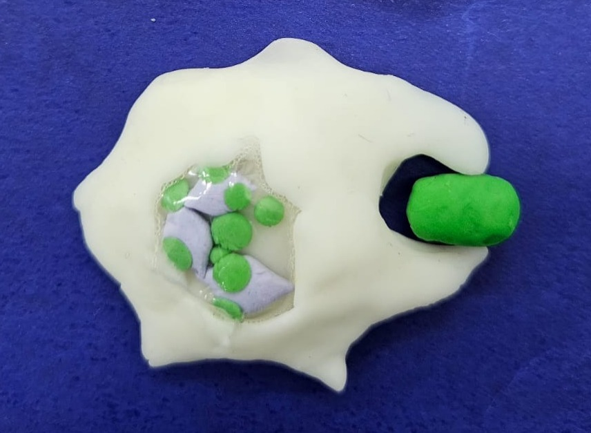
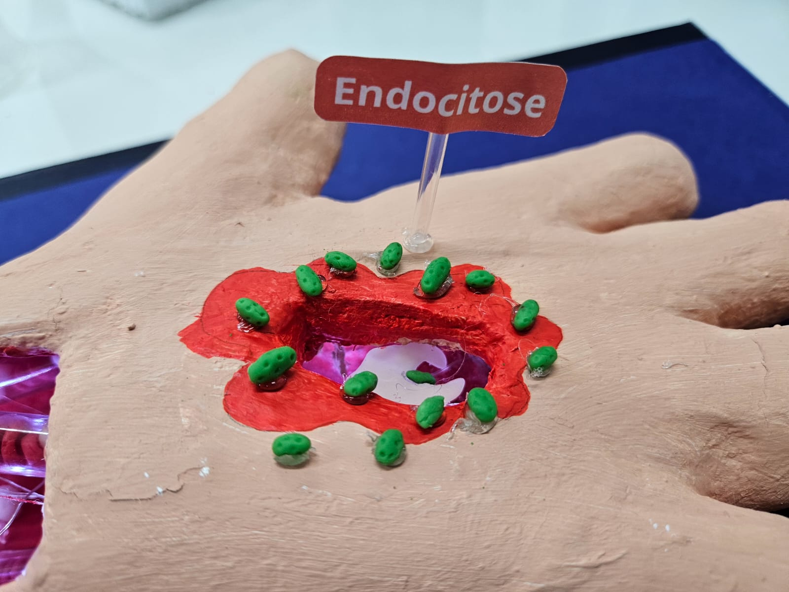

Endocitose

A endocitose ocorre tanto em organismos multicelulares como em seres unicelulares. Nos unicelulares, como protozoários, a endocitose é fundamental para garantir a nutrição dessas células. Sendo assim, a endocitose nesses organismos funciona como a principal forma de obter alimento.
Em organismos multicelulares, por sua vez, a endocitose tem um papel um pouco diferenciado. Em nós, humanos, por exemplo, que possuímos uma digestão extracelular, as células não funcionam garantindo nossa nutrição. Nesse caso, a endocitose tem papel primordial na defesa. Esse é o caso dos glóbulos brancos do nosso corpo, que captam partículas e organismos invasores.
Tipos principais
- Fagocitose: ingestão de partículas sólidas grandes (ex.: fagócitos englobando microrganismos).
- Pinocitose: ingestão de fluidos e pequenas partículas.
- Mediada por receptor: ingestão de moléculas específicas após a ligação dee recepores na membrana (ex.: receptores de LDL).
- Todos são processos de transporte ativo que envolvem a formação de vesículas na membrana celular para trazer substâncias para dentro da célula.
